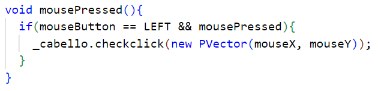
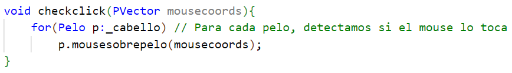
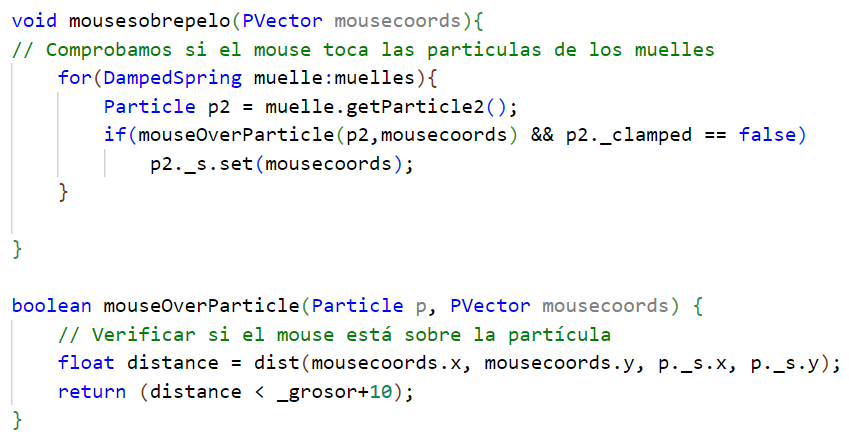

Ejercicio 1: Pelo
Enlace para ver el codigoEn este ejercicio he realizado una simulación de un cabello, donde podemos interactuar con el pelo con el ratón al pulsar sobre él.
Para el video he usado los siguientes parámetros:
- Sim_step: 0,25
- R_Cara: 90
- N_Pelos: 50
- M: 2
- MIN_L: 100
- MAX_L: 300
- MIN_GROSOR: 2
- MAX_GROSOR: 5
- MIN_DIV: 10
- MAX_DIV: 20
- G: 9.81
- Ke: 14
- Kd: 13
En cuanto al programa principal, en la función setup se inicializa un objeto de la clase cabello, la cual almacena todos los pelos que se van a generar. Para crear los pelos, se utiliza el siguiente codigo:
Primero, se utiliza un bucle for para crear tantos pelos como hayamos establecido en los parámetros. En el bucle se obtiene un punto del borde de la cara aleatoriamente el cual será la raíz de un pelo. Después se obtendrán los valores de la longitud, grosor y numero de divisiones del pelo y por ultimo se añadirá el pelo al cabello.
En la función draw, primero se detecta si se ha pulsado el ratón, después se dibuja el fondo, la cabeza y por ultimo el cabello que dibujará todos los pelos. Una vez dibujados, se actualiza la simulación llamando al método update del cabello. En el update del cabello, se llama a la funcion update() de cada pelo.
La clase pelo tiene los siguientes elementos:
- Raiz del pelo
- Longitud total
- Longitud de cada división
- Numero de divisiones
- Grosor
- Lista de muelles
Al crear un pelo, se establecen los parámetros con los que se han pasado al constructor y para crear los muelles y particulas, se utiliza el siguiente codigo
Se crearán tantos muelles como numero de divisiones tengamos. Antes de empezar el bucle, se crea una partícula que será la partícula de la raíz, la cual está anclada y no tiene gravedad. Dentro del bucle, primero creamos la partícula siguiente, cuya posición será igual a la de la partícula 1 + la longitud de cada división en el eje Y. Tras crear la partícula, creamos el muelle entre las partículas 1 y 2 y lo añadimos a la lista de muelles. Finalmente, asignamos p2 como la partícula 1 para la siguiente iteración del bucle.
En la funcion render() de la clase pelo, se recorren todos los muelles y se crea una linea entre las particulas de este. En la función update(), se recorren todos los muelles y se llama a la función update() de cada uno.
La clase muelle tiene los siguientes atributos:
- Particulas p1 y p2: delimitan el muelle
- Ke y Kd
- Elongación de reposo (l0), elongación actual (l) y elongación anterior (l_ant)
- Fuerza aplicada al muelle por p1
En la funcion update() del muelle, se realiza el siguiente codigo:

- Se obtiene la elongación actual con la distancia de p1 a p2
- Calculamos la fuerza elástica con la fórmula de la fuerza elástica:
𝐹𝑒 = 𝐾𝑒 ∗ 𝑥 = 𝐾𝑒 ∗ (𝑙 − 𝑙0)
Donde Ke es la constante elástica del muelle y x el cambio de elongación. - Calculamos la fuerza de amortiguación, que será contraria a la fuerza elástica.
𝐹𝑑 = −𝐾𝑑 ∗ (𝑣2 − 𝑣1)
Donde Kd es la constante de amortiguación del muelle y 𝑣2 − 𝑣1 es la resta de la velocidad de la partícula 2 menos la velocidad de la partícula 1. - Obtenemos la fuerza total del muelle sumando la fuerza elástica y la fuerza de amortiguación:
𝐹𝑡 = 𝐹𝑒 + 𝐹𝑑 - Actualizamos las partículas p1 y p2 con Euler simpléctico. Si la partícula no tiene gravedad, no se añade la fuerza de la gravedad y si está anclada, no se actualiza
Para la interacción con el ratón, he creado el siguiente codigo:
-
En el programa principal, detectamos si hemos pulsado con el click izquierdo y llamamos a checkClick de objeto cabello con las coordenadas del ratón
 -
Después, en la clase cabello para cada pelo detectamos si se ha hecho click sobre el:
 -
Por último, en la clase pelo finalmente detectamos si se ha pulsado sobre un pelo calculando la distancia desde la coordenada pulsada a la segunda partícula de cada muelle
